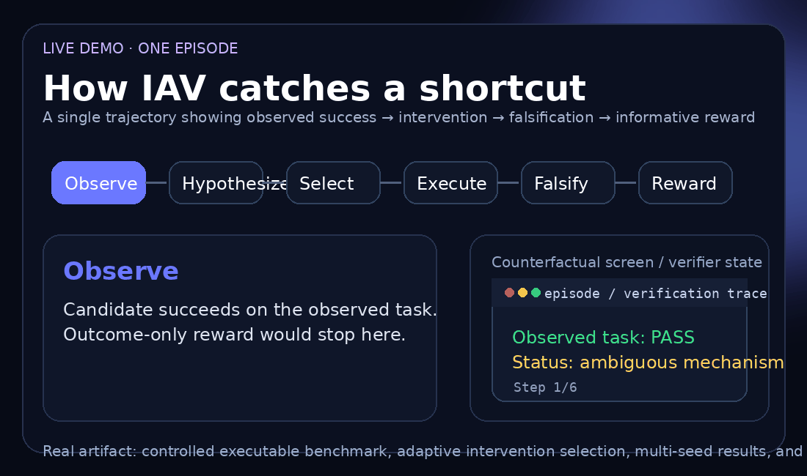
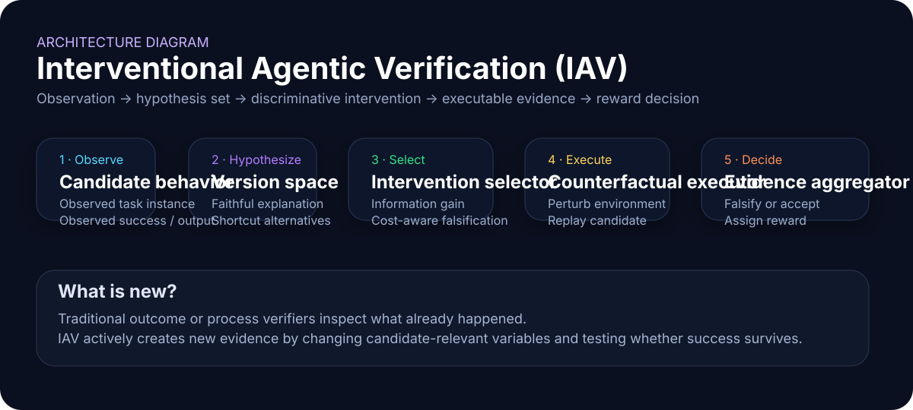
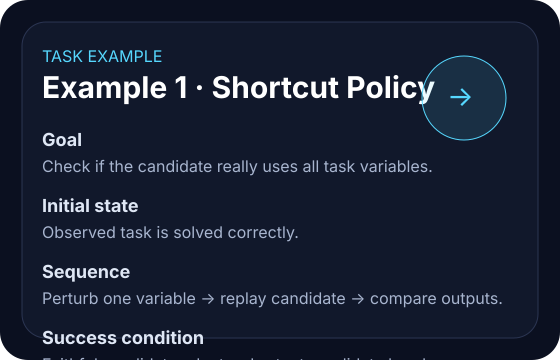
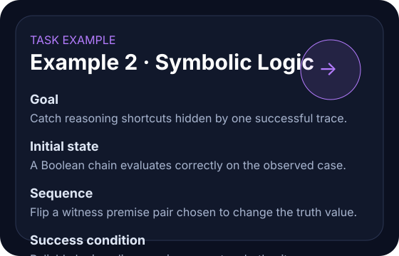
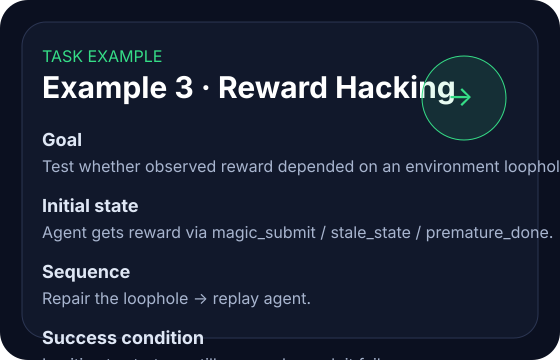
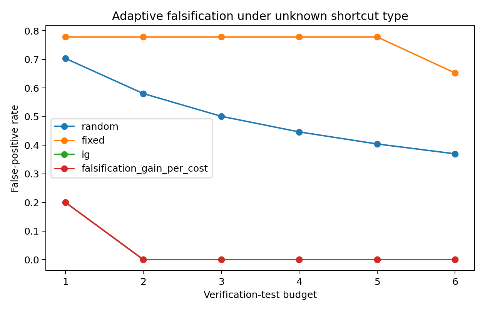
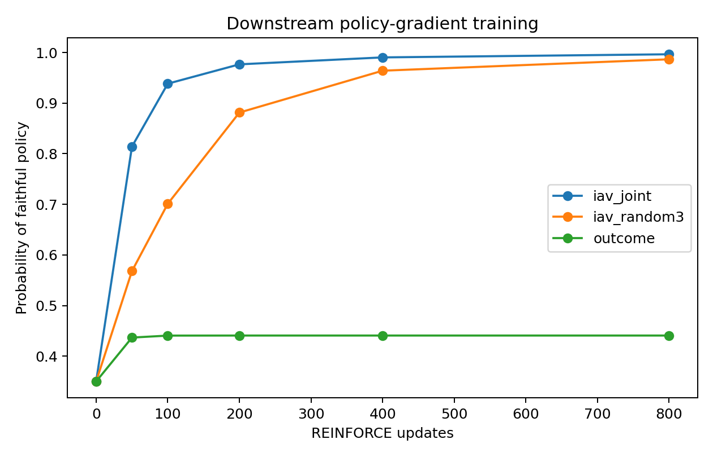
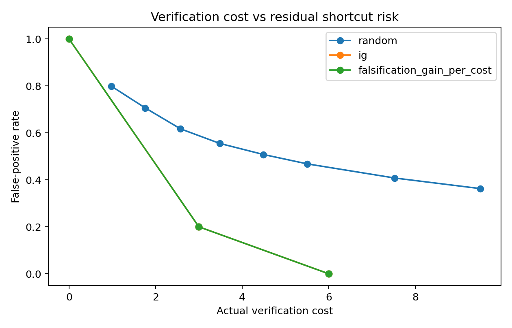
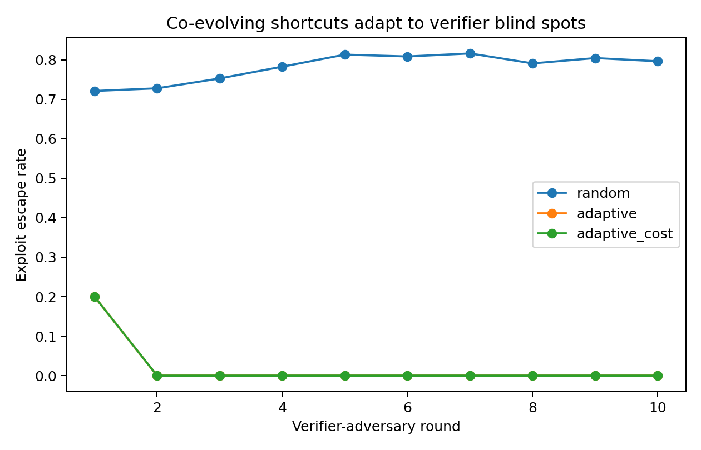
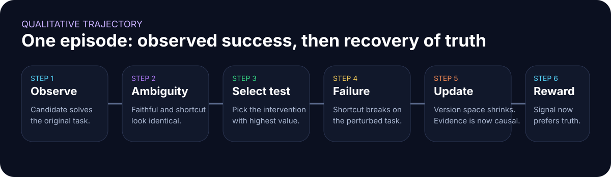

Falsify Before You Reward
A verifier that changes the world before it trusts the agent.
The project studies a simple but consequential failure mode: a faithful policy and a shortcut policy can look equally correct on one observed trajectory. IAV creates new evidence by intervening on candidate-relevant variables, replaying the behavior, and rewarding only what survives targeted falsification.
Active counterfactual verification can reduce false-positive reward by distinguishing faithful agent behavior from shortcut behavior that looks successful on the observed task.
What is it, why is it hard, what was built?
- Problem: observed correctness can be non-identifying.
- Core idea: intervene on variables that correct behavior should depend on.
- Built: IAV framework, executable benchmark, adaptive selector, cost analysis, co-evolution, RL experiments, full artifact package.
- Main result: in the unknown-shortcut suite, budget-1 FPR falls from ~70.3% with random testing to 20.0% with information gain; budget 2 covers the finite suite.
- Why it matters: verifier blind spots become reward blind spots—and therefore optimization targets.

One successful trace can hide the wrong mechanism.
Outcome-based evaluation sees that the agent got the task right. It often cannot tell whether the behavior was grounded, memorized, brittle, or exploitative. That ambiguity is dangerous once verifier scores become rewards.
Shortcut success
Memorization or ignored state can produce the correct observed answer.
Long-horizon brittleness
One wrong dependency can stay hidden until later states amplify it.
Reward hacking
Environment loopholes can trigger the success signal without satisfying intent.
Computer Use relevance
GUI agents need trustworthy verification after stale state, interface shifts, ambiguous actions, or failed recovery.
Why study the verifier itself?
If a verifier is used as reward, its blind spots become part of the agent’s optimization landscape. Rather than hiding this behind a large language model benchmark, the project isolates the scientific question in executable environments where false positives can be measured exactly.
The working hypothesis was that verification should not stop at “does this look correct?” It should ask “what would have to change for a shortcut to reveal itself?”
RQ1
Can interventional verification reduce false-positive reward?
RQ2
Do discriminative interventions beat random or cheap-first tests under limited budget?
RQ3
Does a stronger verifier change downstream RL incentives—not just offline classification?
- H1: active interventions reduce FPR vs outcome-only verification.
- H2: information-seeking tests outperform random testing at matched budget.
- H3: better reward discrimination drives probability mass toward faithful policies in RL.
- H4: arbitrary perturbations can fail when they are not discriminative.
- Accuracy / false-positive rate
- FPR vs intervention budget
- FPR vs verification cost
- Best-of-N reliable selection
- Faithful-policy probability under REINFORCE
- OOD / noise / prior-shift robustness
Do not inspect harder. Create better evidence.
If multiple hypotheses explain the same observed success, more passive inspection may not resolve the ambiguity. IAV spends verification budget on interventions that should separate the hypotheses.

Collect the original candidate behavior and terminal outcome.
Maintain faithful and shortcut explanations consistent with the observation.
Choose the intervention with high discriminatory / falsification value under the remaining budget.
Run the counterfactual environment or repair the suspected loophole.
Shrink the version space based on pass / fail evidence.
Reward only after relevant shortcut hypotheses have been falsified under the available budget.
What was actually built?
- programmatic task generation
- deterministic seeds and resets
- executable oracle checks
- adaptive intervention selection
- raw + aggregate result logging
- plot generation
- failure-family breakdowns
- cost-aware, prior-shift, and co-evolution evaluations
- Input: candidate behavior + observed task + intervention family.
- Output: accept / reject / reward plus falsification trace.
- Observation: exact executable pass / fail evidence.
- Action: choose a counterfactual test or environment repair.
- Objective: maximize useful discrimination under budget.
Three concrete verification tasks.
Each begins with a candidate that appears correct. The verifier’s job is to find out whether that success survives a test that should matter.



The technical story, before the reader reaches the appendix.
The central findings are visible here; raw result files and complete experiment archives are linked at the bottom.




A baseline has to exist for the gain to mean anything.
Summary values below are taken from the executed artifact. Perfect scores are explicitly limited to finite controlled suites.
| Setting | Method | Metric | Result | Interpretation |
|---|---|---|---|---|
| Unknown shortcut | Random, B=1 | FPR | 70.3% | Casual tests miss most shortcut mass. |
| Unknown shortcut | Information gain, B=1 | FPR | 20.0% | Adaptive selection buys a large gain immediately. |
| Unknown shortcut | Information gain, B=2 | FPR | 0.0% | Two strong witnesses cover the finite suite. |
| Best-of-8 | Outcome only | Reliable selection | 35.1% | Observed correctness barely identifies reliability. |
| Best-of-8 | IAV | Reliable selection | 96.8% | Verification quality directly improves candidate choice. |
| REINFORCE | Outcome reward | Faithful-policy probability | 36.6% | Reward remains close to indifferent. |
| REINFORCE | IAV reward | Faithful-policy probability | 99.65% | Reward becomes informative about faithfulness. |
What the method has to beat.
- Outcome-only verification
- Random interventions
- Fixed / cheap-first tests
- Entropy-per-cost variants
- Arbitrary perturbations
- Cost-matched random baselines
- remove interventions entirely
- replace adaptive selection with random testing
- optimize only for cheapness
- change intervention magnitude
- shift shortcut priors
- inject verifier noise
- test symmetric domains where IG should not dominate
Where it still fails—and why that matters.
This is one of the strongest parts of the project because the negative results changed the method, rather than being hidden.
Non-discriminative perturbations
In symbolic logic, simply flipping inputs can leave faithful and shortcut policies indistinguishable. Intervention alone is not enough.
Symmetric repair domains
In a fair reward-hack transfer setting, generic IG can tie cost-matched random at low budgets because available tests induce equivalent partitions.
External validity
The strongest claims are controlled and executable. The page does not pretend that unrun frontier-model experiments were completed.

- OOD numeric ranges
- longer symbolic chains
- frozen selector under prior shift
- Best-of-N candidate selection
- same falsification principle across reasoning, logic, code, and reward-hack domains
- injected verifier noise
- intervention-magnitude collisions
- cost-constrained test selection
- adversarial co-evolution
Reliable verification is an action-safety primitive.
For GUI and Computer Use agents, a single successful trajectory is not sufficient evidence for granting more autonomy. Destructive or irreversible actions should require stronger verification, explicit confirmations, trusted state tracking, replayable logs, and robust handling of untrusted external content or prompt injection.
- primary metrics: accuracy + FPR
- multi-seed reporting
- raw + aggregate CSV outputs
- exact executable correctness
- explicit scope limits
- negative results retained
Built as a research system.
- one-command reproduction
- deterministic seeds
- modular benchmark suites
- automatic figures
- raw + aggregate logs
- artifact README
- Executable environments: exact auditing.
- Finite hypotheses: isolate identifiability.
- No forced frontier-model dependency: keep core claims reproducible.
- no external API cost
- no pretrained model download required
- ~7s observed core runtime
- explicit cost-vs-FPR curves
Three findings that changed the research direction.
- Observed correctness can be too weak to train on.
- Arbitrary perturbation is not the same as discriminative evidence.
- Cheap tests can be exactly the wrong tests if they miss the failure family.
- approximate open-ended hypothesis generation
- GUI / Computer Use extension over richer screen/action state
- safety thresholds for irreversible actions
The project evolved through failed ideas, not a one-shot proposal.
That evolution is visible in the preserved earlier artifacts and negative results.
Everything linked, nothing implied.
The project archive contains the manuscript, LaTeX, BibTeX, technical report, results, figures, and experiment packages. A public GitHub URL was not available in this environment, so the code CTA points to the real archive instead of inventing a repository.